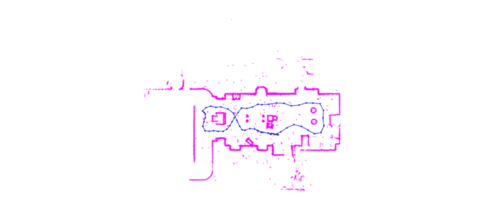

Rover martien : Marauder
Vidéo

Contexte général
En partenariat avec les écoles d'ingénieurs françaises, le Centre national d'études spatiales (CNES) envisage la conception d'un rover destiné à explorer et cartographier Mars. Cette partie du projet porte sur la conception informatique.
×

Sujet du projet
Développement d'un système de SLAM visuel et d'un déplacement autonome pour le rover martien MARAUDER.
Travail réalisé
- Formation.
- Recherche et documentation sur le fonctionnement de ROS (Robot Operating System).
- Installation et configuration de l'environnement de développement ROS sur les machines des membres de l'équipe.
- Formation à l'utilisation de ROS, en particulier des outils et des concepts nécessaires pour travailler avec le MARAUDER.
- Étude des spécifications techniques du MARAUDER, y compris les capteurs, les actionneurs et l'architecture matérielle.
- Mise en place des algorithmes dans la routine d’exécution du robot.
- Analyse des algorithmes existants de SLAM visuel pour sélectionner ceux adaptés au projet.
- Adaptation des algorithmes de SLAM visuel pour répondre aux besoins spécifiques du MARAUDER.
- Intégration des algorithmes de SLAM visuel dans le système d'exploitation ROS du MARAUDER.
- Expérimentations et mesures de performances.
- Développement de scripts ou de programmes pour tester les performances des algorithmes de SLAM visuel.
- Conception et réalisation d'expériences pour évaluer la précision et la robustesse du système de SLAM visuel.
- Collecte et analyse des données expérimentales pour ajuster et améliorer les algorithmes.
- Réalisation de tests de validation pour s'assurer que le système de SLAM visuel fonctionne correctement dans divers environnements et conditions.
- Rapport et résultats.
- Élaboration de rapports d'avancement réguliers pour présenter l'état du projet aux parties prenantes.
- Documentation détaillée de toutes les étapes du projet, y compris les résultats des expérimentations et les solutions techniques mises en œuvre.
- Préparation de démonstrations ou de présentations pour partager les résultats du projet avec d'autres équipes.
- Identification et planification d'éventuelles extensions ou améliorations du projet pour aller au-delà des objectifs initiaux.
Résultats obtenus
- Le rover démontre la capacité d'éviter les obstacles grâce à ses fonctionnalités autonomes.
- Acquisition d'une carte 2D de l'environnement.
Technologies utilisées
Technologies
- SLAM
- Vision par ordinateur
Langages
- C++
- Shell
Systèmes
- Logiciels embarqués
- ROS
Méthodes
- Integration et Validation
- Robotique
Restons en contact !
Merci d'avoir consulté mon profil. Si vous souhaitez me joindre, vous pouvez utiliser les coordonnées ci-dessous.
Adresse:
Léo BACKERT6 Chemin des Aulnes
67120 Dorlisheim, France